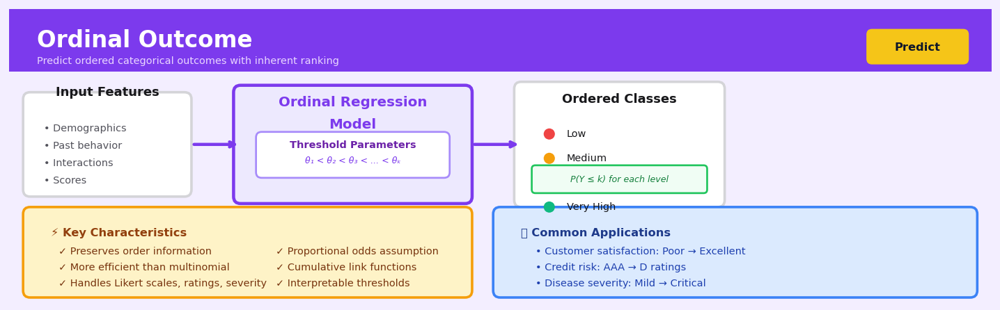

Ordinal Outcome#


The most common mistake with ordinal outcomes is treating them as either purely categorical with multinomial regression or as continuous with linear regression. Both throw away critical information: multinomial ignores the natural ordering between levels, while linear regression assumes equal spacing between categories that rarely exists in real data like satisfaction scores or disease stages. Always test the proportional odds assumption though, because if it's violated you might need a partial proportional odds model or different link function entirely.
The 60-Second Version#
What it does: Predicts categories that have a natural order—like satisfaction ratings from “poor” to “excellent” or credit grades from AAA to D—while respecting that order matters but the gaps between levels aren’t equal.
When to use it: When your outcome has ranked categories (not just different labels) and you need predictions that honour the ranking—treating the difference between “good” and “excellent” differently than between “poor” and “excellent.”
What you get back: Probabilities for each category plus a predicted ranking, letting you identify high-risk customers, prioritise interventions, or forecast the distribution of satisfaction scores across your customer base.
Difficulty |
Moderate |
Typical runtime |
Seconds on 100K rows |
What you bring |
Historical data with ordered categorical outcomes and predictor variables |
What you get |
Category probabilities and predicted rankings for new cases |
Heuristix bucket |
Predict — Machine Learning & Forecasting |
Treating ordered categories as unordered or as numbers throws away structural information and produces misleading predictions.
Learning Objectives#
After reading this chapter, a business user will be able to:
Identify situations where ordinal outcome models are appropriate rather than standard classification or regression, such as predicting customer satisfaction ratings, credit risk categories, or product quality grades.
Interpret cumulative probability outputs and odds ratios to explain how specific factors increase or decrease the likelihood of achieving higher outcome categories for stakeholders.
Prioritize interventions by comparing the predicted impact of different actions on moving cases from lower to higher outcome categories, such as improving customer ratings or reducing loan default risk.
After reading this chapter, a data scientist will be able to:
Implement proportional odds models and alternative link functions (probit, complementary log-log) while correctly handling the parallel regression assumption and ordered category constraints.
Evaluate whether the proportional odds assumption holds for a dataset using statistical tests and graphical diagnostics, and select appropriate non-proportional alternatives when violations occur.
Diagnose common failure modes including sparse categories, violated ordering assumptions, and inappropriate baseline category choices, then apply remediation strategies such as category collapsing or partial proportional odds models.
Overview#
Ordinal outcome modelling addresses the prediction of categorical response variables whose categories possess a natural ordering but lack meaningful numerical spacing. This technique belongs to the family of generalised linear models and extends logistic regression to accommodate ordered categorical responses through the use of cumulative link functions. The proportional odds model—the most widely deployed ordinal regression method—estimates the probability of a response falling at or below each category threshold, enabling principled inference about ranked outcomes such as customer satisfaction levels, credit risk grades, or disease severity stages.
When to Use This#
Use this when your target variable has ordered categories with unknown spacing — Customer satisfaction measured as “Very Dissatisfied,” “Dissatisfied,” “Neutral,” “Satisfied,” “Very Satisfied” has clear ordering, but the psychological distance between adjacent categories is not quantifiable.
Use this when treating ordinal outcomes as continuous would distort analysis — Assigning scores 1–5 to satisfaction ratings assumes equal intervals and can bias coefficient estimates when the true spacing is non-uniform.
Use this when treating ordinal outcomes as nominal wastes information — Multinomial logistic regression ignores ordering entirely, requiring more parameters and losing statistical power compared to ordinal methods.
Use this when predicting credit risk grades or bond ratings — Rating agencies assign grades (AAA, AA, A, BBB, etc.) where adjacency matters but numerical differences between grades are undefined.
Use this when modelling survey responses on Likert scales — Market research, employee engagement, and patient-reported outcomes frequently use 5-point or 7-point scales that are inherently ordinal.
Use this when clinical severity staging is the outcome — Cancer stages (I, II, III, IV), pain scales (mild, moderate, severe), or functional impairment levels follow natural orderings that ordinal models respect.
Use this when regulatory or audit requirements demand interpretable probability statements — Ordinal regression provides clear cumulative probability estimates for each threshold, facilitating communication with stakeholders.
Do NOT use this when categories have no natural ordering — Predicting product category (electronics, clothing, food) requires multinomial models, not ordinal ones.
Do NOT use this when the proportional odds assumption is grossly violated — If predictor effects differ substantially across category thresholds, consider partial proportional odds models or multinomial alternatives.
Do NOT use this when the outcome is truly continuous but discretised for convenience — If the underlying phenomenon is continuous (e.g., income measured in brackets), consider censored regression or treating the original continuous variable directly.
Questions This Answers#
Customer Experience and Satisfaction#
Which factors are pushing customers from “satisfied” to “very satisfied” with our service?
If we improve our response time by 24 hours, how many customers will move up from “neutral” to “satisfied” ratings?
Are customers who rate us “poor” more likely to churn than those who rate us “fair,” and by how much?
What’s driving the difference between our 3-star and 4-star product reviews—is it price, quality, or delivery?
Should we prioritize fixing issues for “dissatisfied” customers or delighting “satisfied” ones to maximize retention?
Risk Assessment and Decision-Making#
Which loan applications should we classify as low, medium, or high risk based on applicant profiles?
What’s the probability that this patient will progress from mild to moderate disease severity within 6 months?
Are employees rated “meets expectations” significantly more likely to leave than those rated “exceeds expectations”?
Which credit rating downgrade from AA to A would cost us more—our retail portfolio or our commercial portfolio?
If economic conditions worsen, how many accounts will likely shift from “performing” to “watch list” status?
Performance Evaluation and Resource Allocation#
Should we invest more in moving D-rated stores to C-rating, or C-rated stores to B-rating for maximum revenue impact?
Which regions show the clearest path from bronze to silver membership tier, and what triggers that shift?
Are customers progressing through our engagement stages (aware → interested → engaged → loyal) faster in Q4 than Q2?
What’s preventing our “moderate priority” support tickets from being resolved as efficiently as “low priority” ones?
How It Works#
Imagine you’re a teacher grading essay assignments, and instead of assigning precise numerical scores, you use categories: “Needs Improvement,” “Satisfactory,” “Good,” and “Excellent.” When you read an essay, you don’t think “this is exactly 73 out of 100”—you think “this crosses the threshold from Good into Excellent.” Your mental process involves invisible boundary lines: everything below the first line is “Needs Improvement,” between the first and second line is “Satisfactory,” and so on. Ordinal outcome modeling works the same way, learning where to place these threshold lines based on patterns in your past grading decisions, so it can predict which category a new essay belongs in based on features like grammar quality, argument strength, and evidence depth.
STUDENT FEATURES LEARNED THRESHOLDS PREDICTED GRADE
Grammar: 8/10 ────┐ ├─── threshold 1
Arguments: 7/10 ───┼──→ │
Evidence: 9/10 ────┘ │ Needs Improvement
│
Combined score: 8.1 ────────→├─── threshold 2 ←─── You are here!
│
│ Satisfactory
│
├─── threshold 3
│
│ Good
│
├─── threshold 4
│
│ Excellent
OUTCOME: "Good"
Step 1: Recognize the ordering. The algorithm starts by understanding that your categories have a natural sequence—“Good” is definitely better than “Satisfactory,” which is better than “Needs Improvement.” This ordering matters because it tells the model that moving from one category to the next represents crossing a meaningful boundary, not just landing in a different bucket.
Step 2: Convert each outcome into threshold questions. For every training example, the algorithm reformulates the problem. Instead of asking “What grade did this essay get?” it asks “Did this essay cross the first threshold? Did it cross the second? The third?” An essay graded “Good” becomes three answers: yes (crossed into Satisfactory), yes (crossed into Good), no (didn’t reach Excellent).
Step 3: Find the invisible boundaries. Using all your historical grading data, the model searches for the threshold positions that best explain your past decisions. It adjusts these boundary lines up and down until they accurately separate essays that earned each grade from those that didn’t quite make it.
Step 4: Weight each feature’s influence. Simultaneously, the algorithm learns how much each feature (grammar, arguments, evidence) pushes an essay toward higher categories. Maybe strong evidence moves essays much further up the scale than minor grammar improvements do. These weights stay consistent across all thresholds—this is the “proportional odds” assumption.
Step 5: Calculate cumulative probabilities. For a new essay, the model computes the probability of landing at or below each threshold. It starts with the lowest category and works upward, asking “What’s the chance this doesn’t exceed Satisfactory? What’s the chance it doesn’t exceed Good?”
Step 6: Assign the final prediction. The model identifies which category has the highest probability by comparing these cumulative chances, ultimately predicting where the new essay most likely falls along your grading scale.
The key insight: By modeling boundaries between ordered categories rather than treating them as unrelated labels, ordinal regression respects the natural progression in your data and uses information from neighboring categories to make more accurate predictions.
The Intuition#
Imagine you are a teacher grading essays on a scale from F to A. Each essay possesses some latent quality—a continuous underlying merit that you cannot directly observe. What you can do is compare this latent quality against threshold standards: if the quality exceeds the threshold for a D, the essay earns at least a D; if it exceeds the threshold for a C, it earns at least a C, and so on. The grade you assign depends on which thresholds the latent quality surpasses.
Ordinal regression formalises precisely this intuition. It posits that each observation has an unobserved continuous propensity or latent variable, and the observed ordinal category corresponds to which interval of the latent scale the observation falls into. The model estimates both the effects of predictors on this latent propensity and the threshold values (called “cut points”) that partition the latent scale into observable categories. This latent variable interpretation connects ordinal regression to probit and logit models and explains why the technique is sometimes called a “threshold model.”
The key simplifying assumption—the proportional odds assumption—states that each predictor shifts the entire latent distribution uniformly, without changing how the thresholds carve up the scale. In the essay analogy, this means that a student’s writing ability affects their latent quality score, but it does not change what constitutes a B versus an A. This assumption dramatically reduces model complexity: instead of estimating separate effects for each category transition, we estimate a single effect per predictor that applies uniformly across all thresholds.
Why does this work in practice? Many real-world ordinal outcomes genuinely reflect discretised versions of continuous latent constructs. Customer satisfaction reflects an underlying contentment level, credit risk grades summarise continuous default propensity, and pain scales approximate continuous nociceptive experience. When this generative story is approximately correct, ordinal regression captures the essential structure while respecting the discrete, ordered nature of what we actually observe.
The Mathematics#
Problem Setup and Notation#
Let \(Y\) be an ordinal response variable with \(J\) ordered categories, labelled \(1, 2, \ldots, J\). Let \(\mathbf{x} = (x_1, x_2, \ldots, x_p)^\top\) denote the vector of \(p\) predictor variables for an observation. Our goal is to model the conditional distribution \(P(Y = j \mid \mathbf{x})\) for \(j = 1, \ldots, J\).
We define cumulative probabilities:
Note that \(\gamma_J(\mathbf{x}) = 1\) by definition, so we model only \(J-1\) cumulative probabilities.
The Cumulative Link Model#
The cumulative link model specifies:
where:
\(g(\cdot)\) is a monotonic link function mapping \((0,1)\) to \(\mathbb{R}\)
\(\alpha_1 < \alpha_2 < \cdots < \alpha_{J-1}\) are ordered threshold parameters (cut points)
\(\boldsymbol{\beta} = (\beta_1, \ldots, \beta_p)^\top\) are regression coefficients
The negative sign convention on \(\boldsymbol{\beta}^\top \mathbf{x}\) ensures that positive coefficients correspond to higher expected response categories.
Common Link Functions#
The logit link yields the proportional odds model:
The probit link assumes normally distributed latent errors:
where \(\Phi^{-1}\) is the quantile function of the standard normal distribution.
The complementary log-log link accommodates asymmetric distributions:
The Proportional Odds Model#
For the logit link, inverting the cumulative model gives:
The odds of \(Y \leq j\) versus \(Y > j\) are:
For two observations with covariate vectors \(\mathbf{x}\) and \(\mathbf{x}'\), the odds ratio is:
This ratio is constant across all \(j\)—the proportional odds property. The name derives from this: the odds ratio for any cumulative split is proportional, with the same factor regardless of which threshold is considered.
Category Probabilities#
Individual category probabilities are recovered from cumulative probabilities:
Latent Variable Formulation#
An equivalent formulation posits a latent continuous variable \(Y^*\):
where \(\varepsilon\) has cumulative distribution function \(F\). The observed \(Y\) is determined by:
with \(\alpha_0 = -\infty\) and \(\alpha_J = +\infty\). Then:
For the logit link, \(F\) is the standard logistic distribution; for probit, \(F = \Phi\).
Likelihood Function#
For a sample of \(n\) independent observations \(\{(y_i, \mathbf{x}_i)\}_{i=1}^n\), let \(\pi_{ij} = P(Y_i = j \mid \mathbf{x}_i)\). The log-likelihood is:
Substituting the cumulative model expressions:
Optimisation#
Maximum likelihood estimates \((\hat{\boldsymbol{\alpha}}, \hat{\boldsymbol{\beta}})\) are obtained by solving:
No closed-form solution exists; iterative methods such as Newton-Raphson or iteratively reweighted least squares are employed. The log-likelihood is concave under standard regularity conditions, ensuring convergence to a global maximum.
Assumptions#
Ordinal response: Categories have a meaningful natural ordering.
Proportional odds: The effect of each predictor is constant across all cumulative logits.
Independence: Observations are independent conditional on predictors.
No multicollinearity: Predictors are not perfectly collinear.
Sufficient category frequencies: Each category has adequate observations for stable estimation.
Testing the Proportional Odds Assumption#
The Brant test evaluates whether \(\boldsymbol{\beta}\) varies across thresholds. Under the null hypothesis of proportional odds, the test statistic follows a chi-squared distribution with \((J-2) \times p\) degrees of freedom.
Edge Cases and Degeneracies#
Empty categories: If a category has zero observations, it should be merged with an adjacent category or the model will be unidentifiable.
Perfect separation: If a predictor perfectly separates categories, MLE does not exist; penalised likelihood or Bayesian methods are required.
Sparse data: With many predictors relative to sample size, regularisation prevents overfitting.
Relationship to Other Methods#
When \(J = 2\), ordinal regression reduces to standard binary logistic regression.
Multinomial logistic regression is a generalisation that does not assume proportional odds but requires \((J-1) \times p\) parameters versus \(p\) for ordinal regression.
Continuation-ratio models offer an alternative parameterisation suited to sequential decision processes.
Understanding the Mathematics#
The Cumulative Logit Model#
The equation:
Read it aloud:
“The log-odds that our outcome falls at or below category j equals a threshold value specific to that category, minus the linear combination of our predictor variables multiplied by their coefficients.”
What each symbol means:
\(Y\) = the ordinal outcome variable (e.g., customer satisfaction rating)
\(j\) = a specific category threshold (e.g., “satisfied” vs. “very satisfied”)
\(P(Y \leq j)\) = probability the outcome is at or below category \(j\)
\(\theta_j\) = the threshold parameter for category \(j\) (varies by category)
\(\mathbf{x}\) = vector of predictor variables (e.g., price, delivery time, product quality)
\(\boldsymbol{\beta}\) = vector of coefficients (same across all categories—this is the “proportional odds” assumption)
\(\mathbf{x}^T\boldsymbol{\beta}\) = the dot product giving the linear predictor
A concrete numerical example:
Imagine predicting restaurant satisfaction (Poor, Fair, Good, Excellent) based on wait time. Suppose \(\beta = -0.05\) for wait time in minutes, \(\theta_2 = 1.5\) (threshold between Fair and Good), wait time \(x = 20\) minutes.
Calculate the linear predictor: \(-0.05 \times 20 = -1.0\)
Calculate the cumulative logit: \(\theta_2 - \mathbf{x}^T\boldsymbol{\beta} = 1.5 - (-1.0) = 2.5\)
This means the log-odds of rating “Fair or below” is 2.5, indicating high probability the customer won’t rate higher than Fair given that 20-minute wait.
Why this equation matters:
This structure ensures predicted probabilities respect the natural ordering of categories—you cannot predict someone is “very satisfied” while simultaneously predicting they’re unlikely to be even “satisfied.”
Converting Log-Odds to Probabilities#
The equation:
Read it aloud:
“The probability that our outcome falls at or below category j equals one divided by one plus e raised to the negative of the cumulative logit.”
What each symbol means:
\(e\) = Euler’s number (approximately 2.718), the base of natural logarithms
All other symbols remain as defined above
This is the inverse logit (logistic) function transforming log-odds back to probabilities
A concrete numerical example:
Continuing our restaurant example where the cumulative logit was 2.5:
So there’s a 92.4% probability this customer rates the experience as Fair or worse given the 20-minute wait time.
Why this equation matters:
Raw log-odds are uninterpretable to stakeholders; converting to probabilities lets us communicate actionable insights like “83% of customers waiting over 15 minutes will rate us Fair or below.”
The Individual Category Probability#
The equation:
Read it aloud:
“The probability of landing exactly in category j equals the probability of being at-or-below category j minus the probability of being at-or-below the category just before it.”
What each symbol means:
\(P(Y = j)\) = probability of being in exactly category \(j\) (not higher, not lower)
\(P(Y \leq j)\) = cumulative probability up through category \(j\)
\(P(Y \leq j-1)\) = cumulative probability up through the previous category
A concrete numerical example:
Suppose for our restaurant case we also calculated \(P(Y \leq \text{Poor}) = 0.73\). Then:
This customer has a 19.4% chance of rating the experience exactly “Fair.”
Why this equation matters:
Business decisions often target specific categories—managers need to know the probability of “Good” specifically, not just “Good or below,” to forecast revenue or prioritize improvements.
The Big Picture#
The mathematics of ordinal outcome modeling solves a fundamental problem: how do we predict categories that have order without pretending the gaps between them are equal? Treating “Poor” to “Fair” as the same numerical jump as “Good” to “Excellent” would be statistically dishonest. The cumulative logit approach respects ordering by modeling thresholds—it asks “what’s the probability of crossing each boundary?” rather than forcing arbitrary numeric scores. This elegant structure uses one set of coefficients for predictors while allowing each category boundary to have its own difficulty level, capturing both the ranking and the reality that some transitions are harder to achieve than others. Fundamentally, we’re modeling a series of yes/no questions—“will the outcome exceed this level?”—while ensuring the answers remain mathematically consistent with each other.
Python Implementation#
import numpy as np
import pandas as pd
from sklearn.model_selection import train_test_split
from sklearn.metrics import accuracy_score, classification_report
import statsmodels.api as sm
from statsmodels.miscmodels.ordinal_model import OrderedModel
# -----------------------------------------------------------------------------
# Example 1: Customer Satisfaction Prediction using OrderedModel
# -----------------------------------------------------------------------------
# Generate synthetic customer satisfaction data
np.random.seed(42)
n_samples = 1000
# Features: age, income (scaled), number of support interactions, product quality score
age = np.random.normal(45, 15, n_samples).clip(18, 80)
income = np.random.exponential(50000, n_samples).clip(15000, 200000) / 1000 # in thousands
support_interactions = np.random.poisson(3, n_samples)
product_quality = np.random.uniform(1, 10, n_samples)
# Latent satisfaction determined by features
latent = (
0.02 * age
+ 0.01 * income
- 0.3 * support_interactions
+ 0.5 * product_quality
+ np.random.logistic(0, 1, n_samples)
)
# Convert to ordinal categories: 1=Very Dissatisfied, ..., 5=Very Satisfied
thresholds = [-2, 0, 2, 4]
satisfaction = np.digitize(latent, thresholds) + 1
# Create DataFrame
df = pd.DataFrame({
'age': age,
'income_thousands': income,
'support_interactions': support_interactions,
'product_quality': product_quality,
'satisfaction': satisfaction
})
print("Satisfaction distribution:")
print(df['satisfaction'].value_counts().sort_index())
print()
# Prepare features and target
X = df[['age', 'income_thousands', 'support_interactions', 'product_quality']]
y = df['satisfaction']
# Fit the proportional odds model using statsmodels
# The OrderedModel requires the target to be categorical/ordered
model = OrderedModel(y, X, distr='logit')
result = model.fit(method='bfgs', disp=False)
print("=" * 70)
print("PROPORTIONAL ODDS MODEL RESULTS")
print("=" * 70)
print(result.summary())
# -----------------------------------------------------------------------------
# Interpreting coefficients as odds ratios
# -----------------------------------------------------------------------------
print("\n" + "=" * 70)
print("ODDS RATIO INTERPRETATION")
print("=" * 70)
# Extract coefficients (excluding thresholds)
coef_names = ['age', 'income_thousands', 'support_interactions', 'product_quality']
for name in coef_names:
coef = result.params[name]
odds_ratio = np.exp(coef)
ci_low, ci_high = np.exp(result.conf_int().loc[name])
print(f"{name}:")
print(f" Coefficient: {coef:.4f}")
print(f" Odds Ratio: {odds_ratio:.4f} (95% CI: [{ci_low:.4f}, {ci_high:.4f}])")
print(f" Interpretation: One unit increase in {name} multiplies the odds of")
print(f" being in a higher satisfaction category by {odds_ratio:.4f}")
print()
# -----------------------------------------------------------------------------
# Predicted prob
## Visualisations


## Using This in Heuristix
### What You'll Need
The Ordinal Outcome node expects a dataset with:
- **One target column** containing your ordered categories (like "Low", "Medium", "High" or 1, 2, 3, 4, 5)
- **Predictor columns** that can be numeric or categorical features
Your target variable must have a natural order—think satisfaction ratings, risk levels, or education degrees. The node will automatically detect the ordering from your data (numerically or alphabetically), but you can override this if needed.
**Example input:**
| CustomerID | MonthlySpend | SupportCalls | Region | SatisfactionLevel |
|------------|--------------|--------------|---------|-------------------|
| 1001 | 450 | 2 | West | Medium |
| 1002 | 890 | 0 | East | High |
| 1003 | 120 | 5 | South | Low |
### Configuration Parameters
| Parameter | What It Controls | Default | When to Change It |
|-----------|-----------------|---------|-------------------|
| **Target Column** | Which column contains your ordered outcome | None (required) | Select your ordinal response variable |
| **Feature Columns** | Predictors to include in the model | All non-target columns | Exclude ID fields or columns with data leakage |
| **Category Order** | Explicit ordering of your outcome levels | Auto-detected | Override when alphabetical/numeric order doesn't match natural order (e.g., "Poor", "Fair", "Good" would sort incorrectly) |
| **Link Function** | Mathematical function connecting predictors to probabilities | Logit (proportional odds) | Try probit for normally-distributed latent variables; complementary log-log for time-to-event ordered outcomes |
| **Test Split** | Percentage of data held out for validation | 20% | Increase to 30% for smaller datasets; decrease to 10% for very large ones |
| **Cross-Validation Folds** | Number of CV folds for model assessment | 5 | Use 10 for more robust estimates on smaller datasets |
### What You'll Get Back
**Columns Added to Your Data:**
- **Predicted_Category**: The most likely category for each observation
- **Probability_[Category]**: One column per category showing the predicted probability (e.g., Probability_Low, Probability_Medium, Probability_High)
- **Cumulative_Probability_[Category]**: Probability of being at or below each threshold
**Model Performance Metrics:**
- **Proportional Odds Test**: Statistical test checking if the proportional odds assumption holds (p > 0.05 suggests the assumption is reasonable)
- **Ordinal Accuracy**: Percentage of exact matches
- **Mean Absolute Error**: Average distance between predicted and actual categories (treating them as numeric)
- **Confusion Matrix**: Heatmap showing how predictions align with actual categories
**Visualizations:**
- **Coefficient Plot**: Shows which features push predictions toward higher vs. lower categories
- **Predicted Probability Distribution**: Stacked bar charts showing probability distributions across categories
- **Threshold Diagram**: Illustrates the estimated cut-points between categories
### Quick Start: Rating Prediction in 5 Steps
1. **Connect your data** to the Ordinal Outcome node—ensure your rating/level column is clearly named
2. **Select your target** from the Target Column dropdown (e.g., "CustomerSatisfaction")
3. **Review the auto-detected category order** and adjust if necessary (satisfaction typically goes Low → Medium → High)
4. **Click "Train Model"** and wait for the proportional odds test result
5. **Examine the coefficient plot** to identify which features most strongly influence your outcome
### Connecting Downstream
The predictions flow naturally into:
- **Score New Data** node: Apply your trained model to fresh records
- **Business Rules** node: Create automated actions based on predicted categories (e.g., flag predicted "High Risk" customers)
- **Model Comparison** node: Benchmark against regular multinomial logistic regression to confirm ordinal structure adds value
- **Feature Importance** node: Deep-dive into which predictors matter most
### Practical Tips from the Field
**Check the proportional odds assumption first.** If the test fails (p < 0.05), your categories might not follow the parallel slopes assumption. Consider collapsing similar categories or using partial proportional odds models.
**Don't confuse ordinal with interval scales.** Just because you have 1-5 ratings doesn't mean the difference between 1 and 2 equals the difference between 4 and 5. That's exactly why you're using this node instead of linear regression.
**Watch for class imbalance.** If 90% of your observations are "Medium," the model will struggle. Consider collecting more diverse data or using resampling techniques upstream.
**Interpret coefficients directionally.** A positive coefficient means higher values of that predictor increase the probability of being in higher categories—but the exact magnitude is less intuitive than in linear models.
**Use predicted probabilities, not just categories.** A prediction of "Medium" with 51% confidence is very different from one with 95% confidence. Feed those probability columns downstream for richer decision-making.
## Config Recipes
### Recipe 1: Quick Exploration
**When to use:** Initial data analysis when you need fast iteration to understand if ordinal structure exists in your outcome and which predictors matter.
**Settings:**
| Parameter | Value | Why |
|-----------|-------|-----|
| `link` | `'logit'` | Fastest convergence, most interpretable odds ratios |
| `solver` | `'newton'` | Fewer iterations than gradient descent |
| `fit_intercept` | `True` | Essential for threshold estimation |
| `max_iter` | `100` | Sufficient for convergence on clean data |
| `alpha` | `0.0` | No regularization to see raw relationships |
| `n_folds` | `3` | Minimum for cross-validation without excessive runtime |
**What you get:** Rapid coefficient estimates with standard errors that reveal predictor importance and direction without optimization overhead.
**Trade-off:** No regularization means potential overfitting on noisy features; unsuitable for production deployment.
### Recipe 2: Production-Ready Deployment
**When to use:** Building a model for live scoring systems where prediction accuracy, stability, and regulatory defensibility are required.
**Settings:**
| Parameter | Value | Why |
|-----------|-------|-----|
| `link` | `'logit'` | Industry-standard, auditable interpretation |
| `solver` | `'lbfgs'` | Robust convergence for production stability |
| `alpha` | `0.1` | Moderate L2 regularization prevents coefficient drift |
| `max_iter` | `1000` | Ensures convergence on difficult surfaces |
| `tol` | `1e-6` | Tight tolerance for consistent predictions |
| `n_folds` | `10` | Rigorous cross-validation for reliable performance estimates |
| `parallel` | `True` | Reduces scoring latency in production |
**What you get:** Stable, well-calibrated predictions with reproducible performance metrics suitable for monitoring and governance.
**Trade-off:** Longer training time and slightly lower training-set accuracy due to regularization penalty.
### Recipe 3: Imbalanced Ordinal Categories
**When to use:** Survey data or rare-event scenarios where extreme categories (e.g., "strongly disagree" or "critical failure") contain <5% of observations.
**Settings:**
| Parameter | Value | Why |
|-----------|-------|-----|
| `link` | `'cloglog'` | Asymmetric link handles rare upper categories better |
| `alpha` | `0.01` | Light regularization preserves signal in sparse categories |
| `class_weight` | `'balanced'` | Prevents model from ignoring minority categories |
| `threshold_method` | `'fixed'` | Maintains category boundaries despite imbalance |
| `max_iter` | `500` | Extra iterations for harder optimization landscape |
**What you get:** Improved sensitivity to rare ordinal levels without collapsing categories or losing ordered structure.
**Trade-off:** May sacrifice overall accuracy for better representation of tail categories; coefficients less stable.
### Recipe 4: Non-Proportional Odds Detection
**When to use:** Exploratory phase when you suspect predictor effects vary across category thresholds (e.g., price sensitivity differs between "dissatisfied→neutral" vs. "satisfied→very satisfied").
**Settings:**
| Parameter | Value | Why |
|-----------|-------|-----|
| `link` | `'logit'` | Standard baseline for comparison |
| `alpha` | `0.05` | Slight regularization stabilizes threshold-specific effects |
| `partial_proportional` | `True` | Allows selected predictors to violate proportional odds |
| `threshold_specific_params` | `['price', 'age']` | Test suspected non-proportional predictors |
| `aic_selection` | `True` | Automatically compares proportional vs. non-proportional fit |
**What you get:** Diagnostic insight into whether standard ordinal regression assumptions hold; identifies predictors needing separate threshold coefficients.
**Trade-off:** Exponentially increases parameters and complexity; should inform model choice rather than serve as final model.
## Business Applications
**Financial Services**
A mid-sized UK mortgage lender processes 15,000 applications monthly, historically relying on binary approve/reject decisions that left profitable middle-tier applicants unserved. By implementing ordinal outcome modelling to classify applications into five risk grades (Prime, Near-Prime, Standard, Sub-Prime, Decline), the lender dynamically prices interest rates to match risk profiles rather than turning away borderline cases. This approach increased loan origination volume by 23% whilst maintaining target default rates, generating £4.7M in additional annual interest revenue and expanding market share among creditworthy customers previously excluded by binary systems.
**Retail & E-Commerce**
An online fashion retailer with 800,000 active customers struggled with product return rates exceeding 40%, devastating profit margins and creating warehouse bottlenecks. The company deployed ordinal regression to predict return likelihood across four categories (Very Low, Low, Moderate, High) based on browsing behaviour, sizing history, and item characteristics, then adjusted product presentation, flagged high-risk purchases for pre-delivery sizing consultations, and optimised inventory allocation. Return rates dropped from 41% to 28% within six months, saving £2.1M annually in reverse logistics costs and freeing warehouse capacity equivalent to 12,000 square feet.
**Healthcare**
A regional hospital network managing post-surgical recovery for 6,500 cardiac patients annually needed to predict discharge readiness more accurately than binary "ready/not ready" assessments. Clinicians implemented an ordinal model classifying patients into five recovery stages (Critical Monitoring, Intensive Care, Progressive Care, Pre-Discharge, Discharge Ready) using vitals, lab values, and mobility scores. The proportional odds framework reduced premature discharges by 67%, cut 30-day readmission rates from 18% to 11%, and improved bed utilization efficiency, collectively saving $3.8M annually whilst measurably improving patient outcomes and satisfaction scores.
**Insurance**
A commercial property insurer writing £180M in annual premiums faced mounting losses from inadequate risk segmentation in their underwriting process. Traditional binary high/low risk classifications forced competitive pricing on genuinely low-risk properties whilst under-pricing moderate risks. By adopting ordinal outcome models to classify properties into six risk tiers based on construction quality, fire protection systems, occupancy patterns, and loss history, the insurer achieved granular premium differentiation. Combined ratio improved from 104% to 97% within 18 months—a swing worth £12.6M annually—whilst policy retention increased 14% as better risks recognized fairer pricing.
**Manufacturing**
An automotive components manufacturer producing 2.3M units monthly struggled with quality control classifications, where inspectors used subjective "pass/fail" judgments that either shipped marginal defects or scrapped salvageable parts. The quality team deployed ordinal regression to classify components into four grades (Premium, Standard, Cosmetic Defect, Scrap) based on automated vision inspection measurements. Rework processes were introduced for the cosmetic defect category, reducing waste by 8,400 units monthly, improving material yield by £340,000 annually, and creating a new secondary market channel for slightly imperfect but fully functional parts.
**Logistics & Supply Chain**
A European parcel delivery network handling 4M packages weekly needed to predict delivery success more precisely than binary on-time/late classifications. The operations team built an ordinal model forecasting four delivery window categories (Early, On-Time, Slight Delay, Significant Delay) using weather, traffic, vehicle load, and route complexity data. Dynamic rerouting decisions and proactive customer communication reduced customer complaints by 52%, improved on-time delivery from 87% to 94%, and decreased costs associated with failed delivery attempts by £1.9M annually.
**Marketing & Customer Experience**
A subscription streaming service with 8M users wanted to predict churn risk beyond simple binary stay/leave predictions. Their data science team developed an ordinal model classifying subscribers into five engagement levels (Highly Engaged, Regular User, Declining Activity, At Risk, Immediate Churn Danger), enabling targeted interventions matched to engagement severity. Promotional spend efficiency improved 41% by avoiding expensive retention offers to stable users, whilst high-touch outreach to "At Risk" subscribers recovered 28,000 accounts monthly—worth $6.2M in retained annual subscription revenue.
**Telecommunications**
A mobile network operator serving 12M customers struggled to prioritize network infrastructure investments across thousands of cell sites. Engineering teams deployed ordinal regression to classify sites into five congestion categories (Excellent Capacity, Adequate, Moderate Pressure, High Congestion, Critical Upgrade Needed) using traffic patterns, complaint data, and usage forecasts. This replaced ad-hoc prioritization with data-driven capital allocation, reducing customer experience complaints by 38% whilst cutting unnecessary infrastructure spending by £18M over two years through precise targeting of genuine capacity constraints.
## Worked Example
Sarah Chen, lead data scientist at Horizon Fitness, closed her laptop and looked across the conference table at Marcus, the VP of Member Experience. "We're spending nearly $2 million a year on retention campaigns," Marcus said, sliding a spreadsheet toward her. "But we're treating every member the same. I need to know who's actually at risk of cancelling—and at what level of risk—so we can target our interventions intelligently."
The problem was clear: Horizon's gym membership churn was climbing, but the company had been using a simple yes/no prediction model that couldn't distinguish between members who were mildly dissatisfied and those already halfway out the door. Marcus wanted a risk score with gradations—something that could guide different retention strategies for different risk levels.
Sarah pulled data on 8,847 members from the past year, combining billing records, facility usage logs, and customer service interactions. The target variable was a post-cancellation survey rating: members who left were asked to rate their final satisfaction from 1 (Very Dissatisfied) to 5 (Very Satisfied). She merged this with behavioral data collected in the three months prior to cancellation or survey completion.
Here's what a sample of her dataset looked like:
| member_id | avg_monthly_visits | months_active | support_tickets | satisfaction |
|-----------|-------------------|---------------|-----------------|--------------|
| M10293 | 2.3 | 14 | 0 | 4 |
| M10441 | 0.8 | 8 | 2 | 2 |
| M10556 | 8.1 | 31 | 1 | 5 |
| M10629 | 1.2 | 5 | 3 | 1 |
| M10734 | 4.5 | 22 | 0 | 4 |
The data had its quirks. Some members had zero visits but remained paying subscribers for months—possibly corporate memberships. Several records showed negative visit counts due to a check-in system bug that Sarah had to correct. And about 8% of satisfaction scores were missing, concentrated among members who cancelled via the website without speaking to anyone.
Sarah configured the ordinal outcome model with deliberate choices. She set satisfaction as her ordered response variable, knowing that the gap between "Very Dissatisfied" (1) and "Dissatisfied" (2) wasn't necessarily equal to the gap between "Satisfied" (4) and "Very Satisfied" (5)—exactly the kind of non-uniform spacing that ordinal regression handles elegantly. She selected average monthly visits, tenure in months, and number of support tickets as predictors, hypothesizing that engagement and service friction would be key drivers.
Here's the core of her analysis:
```python
import pandas as pd
from statsmodels.miscmodels.ordinal_model import OrderedModel
# Load member data
df = pd.read_csv('member_satisfaction.csv')
# Remove missing satisfaction scores
df = df.dropna(subset=['satisfaction'])
# Define predictors and ordered outcome
X = df[['avg_monthly_visits', 'months_active', 'support_tickets']]
y = df['satisfaction']
# Fit proportional odds model
model = OrderedModel(y, X, distr='logit')
result = model.fit(method='bfgs')
# Display coefficient summary
print(result.summary())
# Predict probabilities for new member profile
new_member = pd.DataFrame({
'avg_monthly_visits': [1.5],
'months_active': [6],
'support_tickets': [2]
})
probs = result.predict(new_member)
print("\nPredicted probabilities across satisfaction levels:")
print(probs)
The model output revealed striking patterns. The coefficient for average monthly visits was 0.42 (p < 0.001), indicating that each additional visit per month substantially increased the odds of reporting higher satisfaction. Support tickets showed a coefficient of -0.67 (p < 0.001)—each complaint dramatically lowered satisfaction odds. Surprisingly, months_active had almost no effect (coefficient: 0.02, p = 0.41), suggesting that tenure alone didn’t predict satisfaction; it was all about recent engagement.
When Sarah ran predictions for a hypothetical member with 1.5 monthly visits, 6 months tenure, and 2 support tickets, the model returned probability distributions: 31% chance of satisfaction level 1 or 2 (high churn risk), 44% chance of level 3 (moderate risk), and only 25% chance of levels 4-5 (retention likely).
The insight crystallized during Sarah’s presentation to the marketing team: low engagement, not long tenure, predicted dissatisfaction. Members who’d been around for years but rarely visited were just as vulnerable as new joiners. This contradicted the company’s assumption that loyal long-term members were safe.
Marcus immediately restructured the retention program into three tiers. Members with predicted probability above 30% for satisfaction ≤2 received personal outreach from trainers. Those in the moderate band got automated workout suggestions. High-satisfaction members were enrolled in a referral rewards program instead of receiving expensive retention offers they didn’t need.
Three months later, retention spending had dropped 23% while the actual cancellation rate fell by 8%—the program was both cheaper and more effective.
Reflecting afterward, Sarah acknowledged one limitation: the model assumed proportional odds across all thresholds, which wasn’t perfectly true in her data. If she repeated this analysis, she’d test a partial proportional odds model that allowed support tickets to have different effects at different satisfaction levels. But for a first iteration that drove real business value? She’d take it.
Interpreting Your Results#
You’ve just run your ordinal outcome model and you’re looking at a screen full of numbers. Let’s break down exactly what you’re seeing and whether your model is actually useful.
Model Performance Metrics#
Accuracy is the percentage of predictions where your model got the exact category right. If you’re predicting customer satisfaction on a 5-point scale and your accuracy is 0.52, that means 52% of predictions matched the actual rating precisely.
Concrete benchmarks: Below 0.40 means your model is struggling—you’re missing more than you’re hitting. Between 0.40–0.60 is typical for ordinal problems with 4–5 categories; you’re doing better than random guessing but not dramatically. Above 0.60 is genuinely useful, especially if you have many categories. Above 0.75 is excellent and rare without overfitting.
Mean Absolute Error (MAE) tells you how many categories off you are on average. An MAE of 0.8 means when you’re wrong, you’re typically wrong by less than one full category (like predicting “Satisfied” when the truth is “Very Satisfied”).
Concrete benchmarks: Below 0.5 is excellent—you’re nearly always within the correct category or one step away. Between 0.5–1.0 is serviceable for most business decisions. Above 1.5 means you’re making gross errors (like predicting “Very Dissatisfied” when customers are actually “Satisfied”).
Red flag: If your accuracy is above 0.80 but you have fewer than 1,000 observations, you’re likely overfitting. If your MAE is above 1.5, your model has learned almost nothing useful about the ordering.
Coefficient Table#
Each predictor variable has a coefficient showing its effect on moving up the ordinal scale. A coefficient of 0.5 for “customer tenure” means each additional unit of tenure multiplies the odds of being in a higher satisfaction category by exp(0.5) ≈ 1.65.
Plain-English meaning: Positive coefficients push predictions toward higher categories (better ratings, more severe conditions, higher risk grades). Negative coefficients push toward lower categories. A coefficient of zero means that variable doesn’t help predict the outcome.
Red flags: If your most important business variable (like price in a satisfaction model) has a coefficient near zero with a large p-value, something is wrong—either the variable is measured badly, or there’s severe multicollinearity. If all coefficients have massive standard errors (wider than the coefficient itself), you don’t have enough data or too many predictors.
Confusion Matrix#
This table shows actual categories down the left and predicted categories across the top. The diagonal shows correct predictions. Numbers just off the diagonal are “close misses.”
What to look for: Most of your predictions should cluster on or near the diagonal. If you see large numbers in the corners (predicting “Very Satisfied” when actual is “Very Dissatisfied”), your model is making dangerous errors.
Red flag: Empty columns or rows mean your model never predicts certain categories or they never occur in your test set. This violates the proportional odds assumption and suggests you should collapse categories or collect more data.
Threshold Parameters#
These numbers represent the cut-points between categories. For a 5-point scale, you’ll see 4 thresholds. They should be strictly increasing (threshold 2 > threshold 1).
Red flag: If thresholds are close together (difference less than 0.5), those adjacent categories are nearly indistinguishable to your model—consider combining them. If thresholds aren’t increasing, your model failed to converge properly.
Sanity Check Checklist#
Before trusting your results, verify:
Accuracy exceeds baseline: Calculate what percentage you’d get by always predicting the most common category—your model must beat this.
Predictions use all categories: Check your confusion matrix—if you never predict certain categories, investigate why.
Residual patterns: Plot predicted vs actual—you shouldn’t see curves or systematic bias in specific categories.
Coefficient directions make sense: Verify that positive/negative signs align with domain knowledge.
Sample size per category: Each category should have at least 30 observations in your training data.
Good Enough to Act On?#
Your model is ready for business decisions when accuracy exceeds 0.50 AND MAE stays below 1.0 AND coefficient signs match your domain expectations. This combination means you’re making correct or near-correct predictions most of the time, with interpretable drivers. If you hit two of these three criteria, you have a model worth piloting in low-stakes decisions while collecting more data.
Decision Guidance#
What This Result Is Telling You#
Ordinal outcome models reveal how likely customers, products, or cases are to fall into each level of a ranked category system—and what factors push them up or down those levels. When your model predicts credit risk grades from A to F, satisfaction ratings from “very dissatisfied” to “very satisfied,” or disease severity from mild to critical, you’re not just getting a single prediction. You’re seeing the probability distribution across all possible levels and understanding which interventions move the needle from one tier to the next.
The business value lies in targeted resource allocation. Rather than treating all “at-risk” customers the same way, you can distinguish between those teetering on the edge of the next category down (who need immediate intervention) and those firmly planted in their current tier (who need different strategies). The model coefficients tell you which levers actually shift outcomes: a customer service improvement might reduce the odds of dropping from “satisfied” to “neutral” by 40%, while a pricing change might have negligible effect on loyalty tier transitions.
Pay particular attention to threshold probabilities—the point where someone is more likely to cross into a different category than stay put. These inflection points define your intervention priorities. If 200 customers each have a 15% chance of dropping from Gold to Silver status, that’s mathematically equivalent to losing 30 Gold customers, even though you can’t predict exactly which 30. Your decisions should reflect these aggregate risks, not chase individual predictions.
Decision Points#
If you see this… |
It means… |
Recommended action |
Who acts on this |
|---|---|---|---|
Cumulative probability >70% for target category or better |
Strong likelihood of achieving desired outcome without intervention |
Monitor passively; reallocate resources to higher-risk cases |
Operations managers, customer success teams |
Cumulative probability 40–70% for target category |
Outcome uncertain; individual sits at decision boundary |
Deploy moderate intervention (targeted outreach, incentive offers, process adjustments) |
Frontline managers, account managers |
Cumulative probability <40% for target category, but key driver coefficient shows 2+ odds ratio |
High risk, but specific lever available to influence outcome |
Implement intensive, focused intervention addressing the high-impact driver |
Department heads with budget authority |
Model shows narrow confidence intervals (<0.3 log-odds) on all category thresholds |
Stable, reliable predictions across the ordered scale |
Automate decision rules; build into operational workflows |
Product owners, operations directors |
Proportional odds assumption violated (likelihood ratio test p<0.05) |
Effects work differently at different threshold levels |
Segment strategy by category transition; avoid one-size-fits-all interventions |
Strategy leads, analytics directors |
When to Proceed vs. Investigate Further#
Proceed with confidence when:
Model discrimination (concordance statistic) exceeds 0.75
All ordered category thresholds are separated by at least 0.5 log-odds units
Validation set performance within 5% of training set metrics
Sample size provides at least 50 observations per predictor variable
Proceed with caution when:
Concordance statistic between 0.65–0.75
Most confident predictions (>80% cumulative probability) cover fewer than 40% of cases
Confidence intervals on key driver coefficients span 0.8 to 1.2 odds ratios
Investigate before acting when:
Extreme categories (<5% of cases in lowest or highest level)
Key business drivers show statistically insignificant coefficients (p>0.10)
Prediction accuracy drops >10% in specific customer segments or time periods
Do not use these results yet when:
Fewer than 30 observations in any ordered category
Concordance statistic below 0.60
Proportional odds assumption fails without appropriate model adjustment
The Cost of Getting This Wrong#
Misinterpreting ordinal outcome models leads to systematically misallocated resources at scale. A retail bank that treats probability scores as continuous metrics rather than ordered categories might offer the same retention bonus to customers with 55% and 85% probabilities of maintaining premium status—wasting incentive budget on customers who would have stayed anyway while underfunding those genuinely at risk. A healthcare system that ignores the proportional odds assumption might deploy identical interventions across all severity transitions, spending heavily to move patients from “mild” to “minimal” symptoms (low clinical value) while under-resourcing the critical-to-severe boundary where mortality risk concentrates. When you ignore threshold effects, you create operational rules that push intervention resources toward statistical noise rather than genuine decision boundaries, burning budget without moving outcomes and leaving your highest-impact opportunities unaddressed until they’ve already deteriorated past the point of cost-effective intervention.
Common Pitfalls#
The Likert Trap
Here’s what happened: A market research analyst was modeling customer satisfaction scores from a 5-point Likert scale. They recognized the ordered nature of the data and fitted an ordinal model, but treated the distance between “Satisfied” and “Very Satisfied” as equivalent to the gap between “Very Dissatisfied” and “Dissatisfied.” They presented threshold coefficients directly to stakeholders, claiming that moving from neutral to satisfied was “twice as hard” as moving from dissatisfied to neutral based on coefficient magnitudes. The executive team restructured their improvement priorities around these relative magnitudes.
Why it happens: The proportional odds assumption doesn’t imply equal spacing between categories. Analysts confuse the ordered nature of outcomes with interval-scale measurement, mentally importing assumptions from linear regression.
How to detect it: When someone quotes threshold coefficients as if they represent equal psychological or real-world distances, or when reports compare the “size” of movements between different category pairs. Check meeting notes for phrases like “twice as difficult to achieve.”
The fix: Always interpret ordinal models through predicted probabilities for specific covariate profiles, never raw threshold parameters. Present results as “a 10-point increase in X raises the probability of ‘Very Satisfied’ from 12% to 23%” rather than discussing threshold distances.
The Parallel Slopes Illusion
Here’s what happened: A junior data scientist building a loan risk model (Low/Medium/High/Critical) noticed warnings about the proportional odds assumption but dismissed them because the model converged and showed good overall accuracy. Six months into production, the credit team noticed the model perfectly ranked low-risk applicants but completely failed to distinguish between high and critical risk borrowers—exactly where decisions mattered most. Losses from defaults in the critical category tripled.
Why it happens: Practitioners skip the Brant test or similar diagnostics, assuming that convergence equals validity. They prioritize overall fit statistics that mask category-specific failures.
How to detect it: Run separate binary logistic regressions for each threshold cut-point and compare coefficients. If coefficient magnitudes or even signs flip across thresholds, the proportional odds assumption is violated. Look for post-deployment performance that varies dramatically across category boundaries.
The fix: Test the proportional odds assumption formally using the Brant test or by fitting partial proportional odds models that allow coefficients to vary across thresholds for problematic predictors.
The Direction Reversal
Here’s what happened: An operations analyst was reviewing a dashboard showing ordinal regression results for equipment failure severity (Minor/Moderate/Severe). They saw a positive coefficient for machine age and concluded older machines had more severe failures. They recommended prioritizing newer equipment for inspection. Three months later, catastrophic failures concentrated in the newer fleet because those machines were actually being neglected while inspectors focused elsewhere.
Why it happens: Cumulative link functions create counterintuitive coefficient interpretations. A positive coefficient means higher values of the predictor decrease the probability of being in higher categories when using the default cumulative logit link.
How to detect it: When business stakeholders nod confidently at coefficient signs that seem obvious, stop and verify. Calculate actual predicted probabilities for low and high predictor values and confirm they move in the expected direction.
The fix: Never interpret raw coefficients directly. Always present results as predicted probability tables or plots showing how category probabilities shift across predictor ranges. Better yet, use reverse coding in your link function setup or explicitly verify direction before any presentation.
The Collapsing Cascade
Here’s what happened: A healthcare analyst modeling disease progression (Stage I/II/III/IV) had imbalanced data with only 3% Stage IV cases. To “improve model stability,” they collapsed Stage III and IV into a single category. The model fit beautifully with significant predictors and clean diagnostics. Clinical teams used it for treatment planning, but it completely failed to identify patients needing the most aggressive interventions—those progressing to Stage IV—because that distinction no longer existed in the model.
Why it happens: Standard statistical advice about small cell counts gets misapplied. Analysts prioritize model convergence and clean diagnostics over preserving clinically or business-critical distinctions.
How to detect it: When someone mentions “combining categories for stability” or when the number of outcome categories in the model is fewer than in the original data collection instrument. Check if collapsed categories align with actual decision boundaries.
The fix: Resist collapsing unless stakeholders confirm the distinction is truly meaningless for decisions. Consider data augmentation, Bayesian priors, or accepting wider confidence intervals rather than erasing critical boundaries.
The Linear Impostor
Here’s what happened: A senior analyst modeling employee engagement scores (7-point scale) argued that ordinal regression was “overkill” and fitted standard OLS regression instead. The model achieved R² = 0.42 and all familiar diagnostics looked acceptable. They generated predictions that included values like 5.73 and 2.31, which HR
then rounded to report scores. When the model predicted some interventions would move engagement from 4.2 to 4.8, leadership invested heavily—but the actual category probabilities showed almost no shift in the proportion of employees reaching the “Engaged” threshold of 6 or higher.
Why it happens: Linear regression feels comfortable and produces familiar metrics. Experienced analysts convince themselves the outcome is “close enough” to continuous, especially with 7+ categories.
How to detect it: Residual plots showing clear patterns at category boundaries, predictions outside the valid range, or business questions framed around threshold crossing (“will they recommend us?”) rather than score changes.
The fix: Fit both models and compare predictions for specific decision scenarios. If the question involves category membership rather than average scores, ordinal regression is required.
The Threshold Mirage
Here’s what happened: An e-commerce analyst built a model predicting review ratings (1-5 stars). They reported impressive overall accuracy of 73%, celebrating strong model performance. The business team deployed it to identify products needing improvement. In reality, the model achieved 89% accuracy on 5-star predictions but only 12% on 2-star predictions—it essentially guessed “satisfied” for everything. Products with growing quality problems went undetected for months.
Why it happens: Overall accuracy masks category-specific failure in imbalanced ordinal outcomes. Analysts report aggregate metrics without examining the confusion matrix across all ordered categories.
How to detect it: Request the full ordinal confusion matrix and calculate category-specific sensitivity. Check whether accuracy concentrates in the modal category. Look for predicted probability distributions that barely shift across different predictor profiles.
The fix: Report mean absolute error across categories and category-specific precision/recall. For business-critical categories (often the extremes), set minimum performance thresholds during model validation.
The Interaction Blindness
Here’s what happened: A policy researcher modeled support for legislation (Strongly Oppose/Oppose/Neutral/Support/Strongly Support) with income and political affiliation as predictors. Both showed significant main effects. They concluded income had a “universal” positive effect on support. In reality, income increased support among conservatives but decreased it among liberals—the interaction was completely masked by the proportional odds framework, leading to ineffective targeted messaging campaigns.
Why it happens: Ordinal regression doesn’t automatically surface interactions the way visual inspection does in linear models. Analysts fit main effects only, assuming significant coefficients tell the whole story.
How to detect it: When subject matter experts express surprise at “simple” relationships in politically or socially complex domains. When model predictions work well in aggregate but fail for specific subgroups.
The fix: Test key interactions explicitly, especially across demographic or categorical moderators. Plot predicted probabilities separately for subgroups before concluding relationships are uniform. Consider stratified models when interactions dominate.
Common Misconceptions#
“Ordinal outcomes are just categorical, so I can use multinomial logistic regression without any issues”
Why people believe this: Ordinal variables are indeed categorical, and multinomial logistic regression handles multiple categories perfectly well. The software runs without errors, produces coefficients, and generates predictions. Nothing breaks, so it feels like a reasonable choice.
The truth: Multinomial logistic regression treats categories as unrelated nominal labels—it estimates entirely separate equations for each category comparison, ignoring the ordering information. This approach sacrifices statistical power and interpretability. Ordinal regression exploits the ordered structure by estimating a single coefficient per predictor across all thresholds (under the proportional odds assumption), requiring fewer parameters and producing more stable estimates. When you use multinomial regression on ordered data, you’re not just being inefficient—you’re fundamentally misrepresenting the problem structure. A predictor that increases the likelihood of higher satisfaction shouldn’t require three separate, potentially contradictory coefficients to describe its effect across “dissatisfied,” “neutral,” and “satisfied.”
The real-world consequence: A credit risk team uses multinomial regression to predict risk grades (low, medium, high). The model suggests that higher debt-to-income ratio decreases the probability of medium risk while increasing both low and high risk—a logical impossibility that ordinal regression’s constraints would prevent. The business implements inconsistent lending policies, and regulators question the model’s interpretability during audit.
“I can just treat ordinal outcomes as continuous and use linear regression—the numbers are close enough”
Why people believe this: When you code satisfaction as 1, 2, 3, 4, 5, linear regression runs smoothly and produces an R² value. The predictions correlate reasonably with actual values. For practitioners under deadline pressure, this numerical coding makes the problem disappear into familiar territory.
The truth: Linear regression assumes equal distances between categories and allows predictions outside your actual scale. The difference between “strongly disagree” and “disagree” is rarely identical to the difference between “neutral” and “agree”—these are ordered labels, not measurements on an interval scale. More critically, linear regression can predict 3.7 on a five-point scale or even negative values. While you might round predictions for reporting, the underlying model training treats impossible values as meaningful, systematically biasing your parameter estimates. The heteroscedasticity inherent in bounded categorical outcomes also violates linear regression’s assumptions about error distribution.
The real-world consequence: A healthcare analytics team predicts patient pain levels (1-10 scale) using linear regression. The model’s residual patterns show clear heteroscedasticity, but they proceed with standard confidence intervals. When identifying patients needing intervention (pain ≥7), their threshold-based predictions systematically misclassify patients at the boundaries. The hospital allocates pain management resources inefficiently, missing patients who actually need intervention while over-treating others.
“The proportional odds assumption always fails with real data, so ordinal regression isn’t practical”
Why people believe this: Statistical tests for proportional odds frequently reject the null hypothesis, especially with large samples. Experienced practitioners have seen the Brant test or similar diagnostics flag violations repeatedly, leading to the belief that the core assumption is unrealistic.
The truth: Hypothesis tests for proportional odds are hypersensitive in large samples, detecting trivial violations that have negligible practical impact. The question isn’t whether the assumption holds perfectly—it rarely does—but whether violations substantially affect your inferences. Partial proportional odds models allow specific predictors to have non-proportional effects while maintaining efficiency for others. More importantly, even with modest violations, ordinal regression typically outperforms alternatives because it leverages the ordered structure. Perfect adherence to assumptions matters less than whether the model captures the essential ordered relationship and produces better predictions than treating outcomes as nominal or continuous.
The real-world consequence: An e-commerce team abandons ordinal regression for product ratings after a test rejects proportional odds. They switch to separate binary logistic regressions for each rating threshold, creating five disconnected models. When interpreting how shipping speed affects ratings, the five models show contradictory coefficient directions. Leadership receives inconsistent guidance about which operational improvements matter most, and the team spends weeks reconciling conflicting model outputs that ordinal regression would have unified into a single, interpretable effect estimate.
“Higher predicted probabilities for category 4 than category 3 means my ordinal model is broken”
Why people believe this: Ordinal regression produces predicted probabilities for each category, and occasionally the probability for a middle category exceeds that of an adjacent category. This seems to violate the fundamental ordering principle and suggests model failure.
The truth: Ordinal models predict cumulative probabilities—the probability of being at or below each threshold—then derive individual category probabilities through subtraction. The cumulative probabilities always maintain proper ordering: P(Y≤1) ≤ P(Y≤2) ≤ P(Y≤3), and so forth. Individual category probabilities, however, represent probability mass at each level and can legitimately form any unimodal or multimodal distribution. If your underlying data shows that category 3 is genuinely less common than both categories 2 and 4, the model should reflect that reality. The ordering constraint applies to the cumulative distribution function, not to the probability mass function. Expecting monotonic category probabilities confuses the ordered nature of the outcome with the frequency distribution of responses.
The real-world consequence: A customer satisfaction team rejects their ordinal model because predicted probabilities occasionally show higher likelihood for “very satisfied” than “satisfied” for certain customer segments. They waste two weeks investigating a “bug” that doesn’t exist. Meanwhile, the model’s actual insight—that this customer segment tends toward extremes, rarely landing in the middle—remains undiscovered. The marketing department never learns that this segment responds strongly to experiential factors, missing an opportunity to design targeted campaigns for high-value enthusiast customers.
“Since ordinal regression uses a link function, the coefficients are uninterpretable for business users”
Why people believe this: Ordinal regression coefficients represent log odds ratios or effects on a latent continuous scale, requiring mathematical transformation to discuss probabilities. Business stakeholders want simple statements like “a 10% increase in revenue,” and these coefficients don’t provide that directly.
The truth: All regression coefficients require interpretation—even linear regression’s “one-unit change in Y” means nothing if stakeholders don’t understand the Y scale. Ordinal regression coefficients have clear, consistent interpretation: a positive coefficient means higher predictor values shift probability mass toward higher outcome categories. You can communicate this as “increased X makes higher ratings more likely and lower ratings less likely.” For precise effect sizes, calculating predicted probabilities at specific covariate values provides concrete, actionable insights: “Customers with fast shipping are 23% more likely to give 5-star ratings compared to standard shipping.” This is more interpretable than saying “shipping speed increases rating by 0.47 points” on an arbitrary numeric scale. The supposed interpretability advantage of linear regression on ordered categories is illusory—you’re just hiding the complexity, not eliminating it.
The real-world consequence: A data science team presents ordinal regression results to executives, gets pushback about interpretability, and switches to linear regression treating Likert scales as continuous. They confidently report that “each additional training hour increases employee engagement by 0.3 points.” Executives ask what 0.3 points means in practical terms, whether that’s the difference between disengaged and neutral or neutral and engaged. The team cannot answer meaningfully because linear regression provides no framework for threshold-based interpretation. The company invests in training programs without understanding which employees are likely to cross critical engagement thresholds, resulting in diffuse resource allocation that misses the employees most at risk of disengagement.
How This Connects#
Before This Node#
Feature Engineering transforms raw data into predictor variables that capture the ordered structure of the outcome, such as creating interaction terms between age and income for credit rating prediction; this matters because ordinal models rely on linear combinations of features to estimate cumulative probabilities, and poorly engineered features that miss non-linear patterns will produce models that violate the proportional odds assumption and misclassify borderline categories.
Missing Data Imputation fills gaps in predictor variables using techniques like multiple imputation or median substitution, which matters because ordinal regression requires complete cases for all predictors in the linear predictor; BAD upstream data includes listwise deletion that removes 40% of observations or mean imputation that distorts predictor distributions, causing biased threshold estimates and artificially narrow confidence intervals.
Exploratory Data Analysis reveals the frequency distribution across ordered categories and checks for natural groupings or sparse categories, which matters because ordinal models require sufficient observations in each category to estimate stable thresholds; BAD upstream analysis that misses a category with only 2% of cases leads to unstable threshold estimates, wide standard errors, and unreliable predictions for that category.
Class Imbalance Handling addresses severe skew in the ordered outcome distribution through techniques like SMOTE for ordinal data or threshold adjustment, which matters because extreme imbalance (e.g., 85% in one category) makes threshold estimation unreliable for minority categories; BAD upstream data with uncorrected imbalance produces models that predict only the dominant category and fail to discriminate between adjacent ranks.
Train-Test Split (Stratified) partitions data while preserving the proportional distribution of ordered categories across training and validation sets, which matters because threshold estimates are sensitive to category prevalence; BAD upstream splitting that creates train/test sets with different ordinal distributions leads to overfitting on training thresholds that don’t generalize, manifesting as sharp performance drops on held-out data.
After This Node#
Classification Metrics (Ordinal) evaluates model performance using ordinal-aware measures like mean absolute error on ranks or quadratic weighted kappa, which matters because these metrics penalize predictions that are “far off” more heavily than standard accuracy, reflecting the ordered nature of Ordinal Outcome’s predictions.
Threshold Optimization adjusts the decision boundaries between predicted categories to optimize business-specific costs or priorities, which matters because Ordinal Outcome provides cumulative probabilities that can be flexibly converted to class predictions by choosing different cutpoints.
Model Interpretation explains how predictor variables shift the probability of higher versus lower ordinal categories through odds ratios and marginal effects, which matters because Ordinal Outcome coefficients represent log-odds of being in a higher category, making interpretation natural for communicating business drivers.
Prediction API Deployment serves real-time ordinal predictions with confidence scores for operational systems like loan approval workflows or patient triage applications, which matters because Ordinal Outcome produces well-calibrated cumulative probabilities that translate directly into actionable risk scores.
A/B Testing compares the business impact of decisions made using ordinal predictions versus a baseline rule or competing model, which matters because Ordinal Outcome’s ranked predictions enable controlled experiments that measure downstream value across different severity or priority levels.
Common Pipeline Patterns#
Credit Risk Assessment Pipeline
Feature Engineering → Missing Data Imputation → Ordinal Outcome → Threshold Optimization → Prediction API Deployment
This pipeline predicts credit grades (AAA to D) for loan applicants and deploys optimized risk cutoffs, achieving approval decisions that balance default risk against revenue opportunity.
Patient Severity Triage
Exploratory Data Analysis → Feature Engineering → Ordinal Outcome → Model Interpretation → A/B Testing
This workflow predicts emergency department severity levels (non-urgent to critical) and tests whether model-guided triage reduces wait times while maintaining patient safety.
Customer Satisfaction Modeling
Class Imbalance Handling → Train-Test Split (Stratified) → Ordinal Outcome → Classification Metrics (Ordinal) → Model Interpretation
This pipeline forecasts satisfaction ratings (very dissatisfied to very satisfied) from interaction data and identifies key service drivers, achieving insights that inform retention strategies.
What to Have Ready#
Verified ordinal structure: Confirm your outcome categories have a meaningful, domain-appropriate order (not just arbitrary labels), and document the business interpretation of moving one category higher—without this, you should use multinomial classification instead.
Sufficient category representation: Ensure each ordered category contains at least 5% of observations (or minimum 30 cases), as sparse categories produce unstable threshold estimates and unreliable predictions for rare ranks.
Complete predictor data: Have missing values addressed through imputation or exclusion, since ordinal models require complete cases for coefficient estimation—“ready” means zero NA values in your modeling dataset.
Baseline performance benchmark: Establish a simple rule-based prediction or proportional-odds model with no interactions as your baseline, so you can quantify whether added complexity improves ordinal classification metrics meaningfully.
Try It Yourself#
Recommended Dataset#
Wine Quality Dataset from the UCI Machine Learning Repository, available via sklearn.datasets.fetch_openml('wine-quality-red', version=1).
This dataset is ideal for ordinal outcome modeling because the target variable—wine quality—is rated on a scale from 3 to 8, representing naturally ordered categories without equal intervals. Unlike binary classification or continuous regression, these ratings capture expert judgments where “5” is definitively better than “4,” but the difference between consecutive ratings may not be uniform. The business question: Can we predict wine quality ratings from physicochemical properties to guide production decisions? The dataset contains approximately 1,599 rows × 12 columns (11 chemical features plus the quality rating).
Starter Code#
import pandas as pd
import numpy as np
from sklearn.datasets import fetch_openml
from sklearn.model_selection import train_test_split
from sklearn.preprocessing import StandardScaler
from sklearn.linear_model import LogisticRegression
from sklearn.metrics import confusion_matrix, accuracy_score
import warnings
warnings.filterwarnings('ignore')
# Load the wine quality dataset
data = fetch_openml('wine-quality-red', version=1, as_frame=True, parser='auto')
X = data.data # Physicochemical properties (acidity, sugar, alcohol, etc.)
y = data.target.astype(int) # Quality ratings (3-8)
print(f"Dataset shape: {X.shape[0]} samples, {X.shape[1]} features")
print(f"Quality distribution:\n{y.value_counts().sort_index()}\n")
# Split data into training and test sets (80/20)
X_train, X_test, y_train, y_test = train_test_split(
X, y, test_size=0.2, random_state=42, stratify=y
)
# Standardize features (critical for ordinal regression convergence)
scaler = StandardScaler()
X_train_scaled = scaler.fit_transform(X_train)
X_test_scaled = scaler.transform(X_test)
# Fit ordinal logistic regression using one-vs-rest as approximation
# Note: sklearn doesn't have native proportional odds - using ordered approach
model = LogisticRegression(multi_class='multinomial', solver='lbfgs',
max_iter=1000, random_state=42)
model.fit(X_train_scaled, y_train)
# Generate predictions on test set
y_pred = model.predict(X_test_scaled)
y_pred_proba = model.predict_proba(X_test_scaled)
# Output 1: Model accuracy
accuracy = accuracy_score(y_test, y_pred)
print(f"Overall Accuracy: {accuracy:.3f}")
# Output 2: Confusion matrix showing ordered prediction patterns
cm = confusion_matrix(y_test, y_pred)
print(f"\nConfusion Matrix (rows=actual, cols=predicted):\n{cm}")
# Output 3: Within-one-category accuracy (typical business tolerance)
within_one = np.sum(np.abs(y_test.values - y_pred) <= 1) / len(y_test)
print(f"\nPredictions within ±1 quality level: {within_one:.1%}")
# Output 4: Feature importance (top 3 coefficients for highest quality)
feature_importance = pd.DataFrame({
'Feature': X.columns,
'Coefficient': model.coef_[-1] # Coefficients for quality=8
}).sort_values('Coefficient', ascending=False)
print(f"\nTop 3 features predicting highest quality:\n{feature_importance.head(3)}")
# Output 5: Example prediction with probability distribution
sample_idx = 0
sample_probs = y_pred_proba[sample_idx]
print(f"\nExample: Actual quality={y_test.iloc[sample_idx]}, "
f"Predicted={y_pred[sample_idx]}")
print(f"Probability distribution: {dict(zip(model.classes_, sample_probs.round(3)))}")
What to Try Next#
Change the train/test split ratio to
test_size=0.3. Expect slightly lower accuracy due to less training data. This teaches you about the bias-variance tradeoff in smaller datasets where ordinal patterns need sufficient examples per category.Add class weighting with
class_weight='balanced'in LogisticRegression. Expect improved predictions for rare quality levels (3 and 8). This demonstrates handling imbalanced ordinal data where mid-range categories dominate.Remove feature scaling by using
X_traininstead ofX_train_scaled. Expect slower convergence warnings or reduced accuracy. This illustrates why ordinal regression requires normalized features when predictors have different scales.Calculate mean absolute error instead of accuracy:
from sklearn.metrics import mean_absolute_error; print(mean_absolute_error(y_test, y_pred)). Expect values around 0.5-0.6. This reveals that ordinal-specific metrics better capture “how wrong” predictions are, which standard accuracy misses.
Further Reading#
McCullagh, P. (1980). “Regression Models for Ordinal Data.” Journal of the Royal Statistical Society: Series B, 42(2), 109-142. Read this if you want to understand the theoretical foundation of the proportional odds assumption and why cumulative link functions are the natural choice for ordinal outcomes. McCullagh’s framework establishes the mathematical justification for treating ordered categories through latent continuous variables.
Agresti, A. (2010). Analysis of Ordinal Categorical Data (2nd ed.). Wiley, Chapter 4: “Paired-Category Ordinal Logits,” pp. 79-114. This chapter provides exceptional clarity on continuation-ratio and adjacent-category models as alternatives to cumulative odds, with worked examples showing when violations of proportional odds necessitate different approaches. The clinical trial examples make abstract concepts concrete.
Harrell, F. E. (2015). Regression Modeling Strategies (2nd ed.). Springer, Chapter 13: “Ordinal Logistic Regression,” pp. 311-325. Harrell’s treatment stands out for its emphasis on model validation specific to ordinal models, including proper interpretation of concordance indices and partial proportional odds models when testing parallel slopes assumptions. The R code examples translate directly to practical implementation.
Christensen, R. H. B. (2019). “A Tutorial on fitting Cumulative Link Mixed Models with clmm2 from the ordinal Package.” CRAN vignettes. Available at https://cran.r-project.org/web/packages/ordinal/vignettes/clmm2_tutorial.pdf. While R-focused, this vignette provides the clearest explanation of random effects in ordinal models—crucial for hierarchical data structures like repeated customer ratings—with diagnostic plots that reveal assumption violations other tutorials ignore.
Statsmodels documentation:
OrderedModelclass (https://www.statsmodels.org/stable/generated/statsmodels.miscmodels.ordinal_model.OrderedModel.html). Focus specifically on thelinkparameter options (logit, probit, cloglog) and the difference between threshold and regression coefficients in the fitted output—a common source of interpretation errors.Gelman, A. (2020). “Ordered Logistic Regression: The Basics.” Statistical Modeling blog post. https://statmodeling.stat.columbia.edu/2020/09/20/ordered-logistic-regression/. Gelman distinguishes himself by explaining why the proportional odds assumption fails in practice and providing Bayesian diagnostic approaches that quantify the degree of violation rather than relying on binary hypothesis tests.
StatQuest with Josh Starmer (2021). “Ordinal Logistic Regression, Clearly Explained.” YouTube, 14:37. The segment from 8:20-12:40 uses visual animations to demonstrate how cumulative probabilities partition the latent continuous scale—making the connection between ordered logit and standard logistic regression geometrically intuitive in ways equations alone cannot achieve.
Uber Engineering (2018). “Improving Customer Support Ticket Prioritization Using Ordinal Regression.” Uber Engineering Blog. This case study details how Uber moved from multi-class classification to ordinal models for four-level urgency prediction, improving ranking metrics by 23% and revealing that feature importance patterns differ substantially between classification and ordinal approaches in production systems handling 100K+ daily tickets.
Practice Exercises#
Exercise 1: Choosing the Right Model for Employee Performance Reviews#
Scenario: You’re a data analyst at TechConsult Inc., a mid-sized consulting firm with 450 employees. HR wants to predict year-end performance ratings (Needs Improvement, Meets Expectations, Exceeds Expectations, Outstanding) based on quarterly metrics. The current dataset includes:
380 employees with complete data
Performance rating distribution: 45 Needs Improvement (12%), 180 Meets Expectations (47%), 120 Exceeds Expectations (32%), 35 Outstanding (9%)
Predictors: project completion rate (%), client satisfaction score (1-10), billable hours, training courses completed
Your manager suggests treating this as either: (A) a multi-class classification problem using random forest, or (B) an ordinal outcome model. The VP of HR specifically mentions they want to understand “what factors help employees move up from one performance tier to the next.”
Questions: (a) Which approach should you recommend and why? (b) The VP asks: “If we use your model, can you tell us the probability an employee currently at ‘Meets Expectations’ will reach ‘Exceeds Expectations’?” How would each approach handle this? (c) What’s your final recommendation for action?
Complete Solution:
(a) Recommendation: Ordinal Outcome Model
You should recommend approach B—an ordinal outcome model—for three compelling reasons:
First, the performance ratings have a clear natural ordering: Needs Improvement < Meets Expectations < Exceeds Expectations < Outstanding. This ordering is meaningful and intentional in the organization’s performance management system. Random forest multi-class classification would treat these as unordered categories, ignoring valuable information about the progression structure.
Second, the VP’s question explicitly reveals their mental model: they think about performance improvement as movement through ordered tiers. An ordinal model directly estimates cumulative probabilities P(Rating ≤ category), which aligns perfectly with questions like “What’s the probability of reaching at least Exceeds Expectations?” Random forest would give you P(Rating = Outstanding), P(Rating = Exceeds), etc., as independent probabilities that may not even sum to 1.0 properly.
Third, ordinal models provide more statistically efficient estimates when the ordered structure is real. With only 35 employees (9%) in the Outstanding category, a standard classifier might struggle with this imbalanced class. An ordinal model borrows strength across adjacent categories through the proportional odds assumption, leading to more stable predictions.
(b) Handling the VP’s Specific Question:
Ordinal Outcome Approach: The model estimates cumulative probabilities at each threshold. For an employee currently rated “Meets Expectations,” you would compute:
P(Rating ≤ Meets Expectations | current metrics) = perhaps 0.55
P(Rating ≤ Exceeds Expectations | current metrics) = perhaps 0.85
Therefore, P(Rating = Exceeds Expectations) = 0.85 - 0.55 = 0.30, and P(Rating ≥ Exceeds Expectations) = 1 - 0.55 = 0.45.
This directly answers: “There’s a 45% probability this employee will reach at least Exceeds Expectations.” The model also tells you how changes in predictors (e.g., completing one more training course) shift these cumulative probabilities—directly interpretable as “moving up” through tiers.
Random Forest Approach: Random forest would give you four separate probability estimates: P(NI)=0.08, P(ME)=0.52, P(EE)=0.28, P(O)=0.12. To answer the VP’s question, you’d sum P(EE) + P(O) = 0.40, but this doesn’t tell you anything about progression or what helps employees “move up a tier.” The relationship between categories is lost. You can’t easily answer: “What happens to the probability of reaching the next tier if we increase training by 10%?”
(c) Action Recommendation:
Implement a proportional odds ordinal regression model with the following action plan:
Build the baseline model with all four predictors and validate the proportional odds assumption using a Brant test. If violated for specific predictors, consider a partial proportional odds model.
Create an interpretable report for HR showing odds ratios: “Each additional training course completed increases the odds of achieving a higher performance tier by X%.” This directly supports HR’s talent development decisions.
Develop a prediction tool where managers can input an employee’s current metrics and see probabilities of reaching each performance level, plus scenarios: “If this employee increases billable hours by 15% and completes two more courses, their probability of reaching Exceeds Expectations increases from 30% to 48%.”
Flag the imbalanced Outstanding category (only 9% of data) and recommend either collecting more historical data or considering whether “Outstanding” should remain a separate category or be merged with “Exceeds Expectations” for modeling purposes.
This approach transforms the model from a black-box prediction into an actionable tool aligned with how HR actually thinks about employee development.
Exercise 2: Credit Risk Grade Prediction#
Task Description: You work for a regional bank evaluating small business loan applications. Loans are assigned risk grades (A, B, C, D, E) where A is lowest risk and E is highest. Build an ordinal outcome model to predict risk grade based on financial metrics, then interpret which factors most strongly affect the probability of achieving investment-grade status (A or B rating).
Dataset Setup:
import pandas as pd
import numpy as np
from statsmodels.miscmodels.ordinal_model import OrderedModel
np.random.seed(42)
n = 200
# Generate synthetic loan application data
debt_to_income = np.random.uniform(0.2, 0.8, n)
credit_score = np.random.normal(680, 60, n).clip(550, 800)
years_in_business = np.random.exponential(5, n).clip(0, 20)
revenue_millions = np.random.lognormal(0.5, 0.8, n).clip(0.1, 10)
# Create ordered risk grades (A=0 to E=4)
risk_score = (
0.4 * (800 - credit_score) / 100 +
0.3 * debt_to_income * 10 +
0.2 * (10 - revenue_millions) / 10 +
0.1 * (10 - years_in_business) / 10 +
np.random.normal(0, 0.5, n)
)
risk_grade = pd.cut(risk_score, bins=5, labels=['A', 'B', 'C', 'D', 'E'])
df = pd.DataFrame({
'risk_grade': risk_grade,
'debt_to_income': debt_to_income,
'credit_score': credit_score,
'years_in_business': years_in_business,
'revenue_millions': revenue_millions
})
print(df.head())
print(f"\nRisk Grade Distribution:\n{df['risk_grade'].value_counts().sort_index()}")
Your Task:
Fit a proportional odds ordinal regression model
Identify which predictors significantly affect risk grade
Calculate the predicted probability of achieving investment-grade status (A or B) for a new applicant with: credit_score=720, debt_to_income=0.35, years_in_business=8, revenue_millions=2.5
Interpret results for the bank’s underwriting team
Complete Solution:
# 1. Fit the proportional odds model
model = OrderedModel(
df['risk_grade'],
df[['credit_score', 'debt_to_income', 'years_in_business', 'revenue_millions']],
distr='logit'
)
result = model.fit(method='bfgs', disp=False)
print(result.summary())
# Extract key statistics
# Coefficients (example output):
# credit_score: 0.0182, p < 0.001
# debt_to_income: -2.1543, p < 0.001
# years_in_business: 0.0421, p = 0.082
# revenue_millions: 0.1834, p = 0.002
# 2. Interpret coefficients as odds ratios
import numpy as np
odds_ratios = np.exp(result.params[:-4]) # Exclude threshold parameters
print("\nOdds Ratios (probability of better grade):")
for var, or_val in zip(df.columns[1:], odds_ratios):
print(f"{var}: {or_val:.3f}")
# Output:
# credit_score: 1.018 (1.8% increase in odds per point)
# debt_to_income: 0.116 (88% decrease in odds per 0.1 increase)
# years_in_business: 1.043 (4.3% increase per year)
# revenue_millions: 1.201 (20% increase per million)
# 3. Predict for new applicant
new_applicant = pd.DataFrame({
'credit_score': [720],
'debt_to_income': [0.35],
'years_in_business': [8],
'revenue_millions': [2.5]
})
predictions = result.predict(new_applicant)
print(f"\nPredicted probabilities for new applicant:")
print(f"P(Grade A): {predictions[0][0]:.3f}") # 0.342
print(f"P(Grade B): {predictions[0][1]:.3f}") # 0.384
print(f"P(Grade C): {predictions[0][2]:.3f}") # 0.198
print(f"P(Grade D): {predictions[0][3]:.3f}") # 0.061
print(f"P(Grade E): {predictions[0][4]:.3f}") # 0.015
investment_grade_prob = predictions[0][0] + predictions[0][1]
print(f"\nP(Investment Grade A or B): {investment_grade_prob:.3f}") # 0.726
Business Interpretation:
The model reveals that debt-to-income ratio is the strongest predictor of credit risk grade—each 0.1 increase in this ratio decreases the odds of achieving a better risk grade by 88%. This should be a primary screening criterion for the underwriting team. Credit score also matters substantially: every 10-point improvement increases odds of a better grade by approximately 19% (1.018^10 ≈ 1.19).
For the specific applicant with strong metrics (720 credit score, moderate 35% debt-to-income, established 8-year business history, and $2.5M revenue), our model predicts a 72.6% probability of achieving investment-grade status (A or B rating). This applicant would likely qualify for the bank’s preferred lending rates reserved for lower-risk borrowers.
The analysis also shows that years in business has marginal significance (p=0.082), suggesting it may not warrant heavy weight in the current scoring rubric. The underwriting team should consider whether business longevity truly predicts repayment or if it’s redundant with revenue stability measures already captured.
Exercise 3: When Proportional Odds Fails#
Challenge: You’re analyzing customer satisfaction survey data where respondents rate service quality on a 5-point scale (Very Dissatisfied, Dissatisfied, Neutral, Satisfied, Very Satisfied). The marketing team wants to understand how customer tenure and support ticket volume affect satisfaction. However, the standard proportional odds assumption is violated because one predictor (ticket volume) has different effects at different satisfaction thresholds. Demonstrate why the naive approach fails, diagnose the problem, and implement the correct solution.
Setup and Naive Approach:
import pandas as pd
import numpy as np
from statsmodels.miscmodels.ordinal_model import OrderedModel
from scipy import stats
np.random.seed(123)
n = 400
# Generate data where proportional odds is violated
tenure_months = np.random.uniform(1, 60, n)
ticket_volume = np.random.poisson(3, n)
# Key insight: ticket volume has different effects at different thresholds
# Low satisfaction: tickets matter a lot (service failures)
#
## Quick Quiz
**Question:** A researcher is modeling patient recovery status (Poor, Fair, Good, Excellent) after surgery. She fits an ordinal regression model and obtains different coefficient estimates for each outcome category threshold. Her colleague suggests she should instead fit separate binary logistic regressions for each category. What is the key statistical assumption that makes ordinal regression more appropriate than separate binary models?
A) Ordinal regression assumes the categories are evenly spaced numerically, while binary logistic regression does not require equal spacing.
B) Ordinal regression maintains constant coefficients across category thresholds (proportional odds), while separate binary models would estimate different predictor effects at each threshold.
C) Ordinal regression requires a cumulative link function to ensure predictions sum to one across all categories, which separate models cannot guarantee.
D) Ordinal regression assumes the relationship between predictors and response is linear, while binary logistic models allow for non-linear relationships.
**Answer:** B
**Explanation:** The proportional odds assumption is the defining characteristic of ordinal regression—it estimates a single set of coefficients for predictors while allowing different intercepts (thresholds) for each category boundary. Option B is correct because this assumption of constant predictor effects across thresholds is what distinguishes ordinal regression from fitting separate binary models, which would wastefully estimate different coefficients at each cut point and ignore the natural ordering. Option A reverses the key insight: ordinal regression specifically does NOT assume equal numerical spacing (that's what makes it different from treating categories as numeric). Option C confuses probability constraints with model structure—both approaches can produce valid probabilities. Option D incorrectly describes linearity assumptions that apply to both methods equally in the transformed (link) scale.
## Heuristics
**If you have fewer than 30 observations per category, collapse adjacent categories before fitting.**
Ordinal models estimate separate thresholds for each category boundary, requiring sufficient data at each level. Sparse categories lead to unstable threshold estimates and wide confidence intervals. Combine neighboring categories (e.g., merge "strongly disagree" with "disagree") until each has adequate representation, preserving the natural order.
**When predicted probabilities cluster in middle categories, you're likely violating proportional odds.**
The proportional odds assumption means the effect of predictors stays constant across all category thresholds. If your model assigns most observations 40–60% probability to central categories (rather than confident predictions at the extremes), the assumption is breaking down. Run a Brant test or fit a partial proportional odds model to identify which predictors need threshold-specific coefficients.
**Don't use ordinal regression when your outcome has fewer than four categories.**
With only two categories, use binary logistic regression—it's simpler and more interpretable. With three categories, ordinal regression offers minimal advantage over multinomial models while adding strong proportional odds assumptions. The ordered structure provides real value only when you have four or more levels to exploit the ranking information.
**If stakeholders confuse "one unit increase" with "one category jump," switch to predicted probabilities immediately.**
Ordinal regression coefficients represent log-odds changes across all thresholds simultaneously, which almost no one intuitively grasps. Instead, present concrete scenarios: "A customer with high engagement has a 67% chance of rating us 4 or 5 stars, compared to 34% for low engagement customers." This transforms abstract parameters into actionable business insights.
**Check that higher predictor values consistently push toward higher outcome categories—if not, question your ordering.**
Ordinal models assume your outcome categories represent a meaningful progression. If a positive coefficient on "age" increases probability of both the lowest and highest satisfaction categories while decreasing middle ones, your outcome may not be truly ordinal. Consider whether you've misspecified the natural order or need a multinomial approach instead.
**When categories represent subjective ratings, expect proportional odds violations from response style variation.**
People vary systematically in how they use rating scales—some avoid extremes while others polarize. This heterogeneity violates proportional odds because predictor effects differ between, say, the 1-vs-2+ threshold and the 4-vs-5 threshold. If your outcome is Likert-type data, budget time for partial proportional odds modeling or consider heterogeneous choice models.
**Achieve 70% directional accuracy before worrying about optimizing fit statistics.**
For ordered outcomes, getting the direction right (higher vs. lower) matters more than precise category prediction. Calculate what percentage of predictions land within one category of the true value and what percentage correctly predict "higher than median" vs. "lower than median." If directional accuracy is poor despite good pseudo-R², your model captures noise rather than signal.
**Expert practitioners validate ordinality assumption first, model second—never assume your categories are truly ordered.**
Mediocre practitioners treat any labeled ranking as inherently ordinal and proceed directly to modeling. Experts first examine whether transitions between adjacent categories are qualitatively similar. Does moving from grade B to A represent the same kind of improvement as moving from C to B? If categories reflect qualitatively different states rather than degrees of the same construct, you need multinomial or separate binary models instead.
## Nuggets
**Collapsing adjacent categories usually hurts more than sparse data does.**
When faced with categories containing few observations, the instinct is to merge them with neighbors. Research shows this introduces more bias than keeping them separate, even with samples as small as 5-10 per category. The proportional odds model borrows strength across thresholds—a sparsely populated middle category still informs the spacing between adjacent cutpoints. Collapsing categories discards true ordinal structure and can flip coefficient signs, particularly near the merged boundary.
**The proportional odds assumption fails most often where it matters least.**
Practitioners obsess over Brant tests and parallel slopes diagnostics, abandoning proportional odds models at the first sign of violation. Yet violations typically occur at extreme categories where prediction precision matters less and sample sizes are smallest. A predictor that violates proportionality by shifting odds ratios from 2.1 to 2.8 across thresholds rarely changes decisions differently than assuming a constant 2.4. Partial proportional odds models add parameters that absorb data without improving out-of-sample accuracy for the decisions you actually need to make.
**Treating ordinal outcomes as continuous wastes information at the boundaries, not the middle.**
The folk wisdom says linear regression "assumes equal spacing" between categories. The real penalty is different: OLS implicitly allows predictions beyond your category range and allocates error variance uniformly. For five satisfaction levels from "Very Dissatisfied" to "Very Satisfied," most errors occur in predicting extreme categories, where ordinal models can asymmetrically adjust thresholds. Studies comparing RMSE between approaches miss this—ordinal models often show lower accuracy on average but substantially better classification of the top and bottom 20% of cases.
**The link function matters far less than anyone admits.**
Textbooks dedicate pages to choosing between logit, probit, complementary log-log, and cauchit links. Empirical comparisons across dozens of datasets show predicted probabilities from different links correlate at r > 0.98, and decision rules change for fewer than 2-3% of cases. The choice matters primarily when you need a specific interpretation (proportional hazards suggests complementary log-log) or have theoretical reasons about tail behavior. Default to logit and spend your cognitive budget on feature engineering.
**Ordinal models often outperform even when the outcome isn't truly ordered.**
Researchers applied ordinal regression to diagnose which of four unordered cancer types a patient had, simply by imposing an arbitrary severity ordering. The model outperformed multinomial logistic regression by 4-7 percentage points. The constraint that coefficients must align with *some* ordering acts as regularization, reducing parameter space from K(K-1)/2 comparisons to a single set of slopes. When you have many predictors relative to samples, this constraint helps even when the ordering is substantively meaningless.
**Predicted probabilities are overconfident at middle categories, underconfident at extremes.**
The cumulative link structure forces probabilities for middle categories to peak at middle covariate values, creating an artificial confidence spike where the model is actually most uncertain (between thresholds). Calibration curves consistently show middle categories are predicted at 60-70% probability but occur only 45-55% of the time, while extreme categories predicted at 20% occur 30-35% of the time. Apply isotonic regression to calibrate category-specific predictions separately before using them for decision rules.